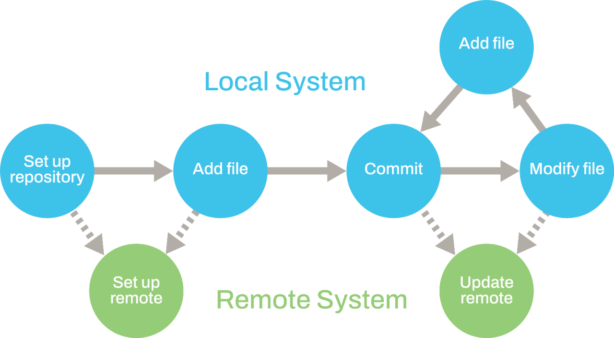

6 Version control
Version control enables multiple users to collaborate efficiently by recording modifications, keeping a history of changes and allowing users to revert to previous versions when needed.
6.0.1 Why is version control important?
Version control is essential for research, software development and document management because it:
- Prevents data loss by maintaining backups of previous versions.
- Facilitates teamwork by allowing multiple users to work on the same project without overwriting each other’s changes.
- Ensures consistency and organisation across different project versions.
- Enhances transparency and accountability by keeping a log of who made changes and when.
By using version control systems like Git, teams can work on different features simultaneously, troubleshoot issues and integrate changes efficiently. This makes version control a fundamental tool for managing projects that involve continuous updates and collaboration.
6.0.2 Version control software
Version control software is designed to help you manage your file revisions. The software runs directly on your computer, allowing you to manage files within your local file system. You can also use version control software to interact with external copies of versioned files if you choose. Here we focus on the widely used open-source software Git. Git offers flexibility in how you can use it for version control. You can use it as a stand-alone tool to manage files on your own computer and, optionally, you can use it to connect to an external service to archive your files. Git can be used directly on the commandline, through other IDE software, or via standalone graphical programs (the official Git website lists several options1), so it is flexibly integrated into your normal workflow.
Git is a distributed version control system, which means that each user interacts with a stand-alone copy of the versioned files. This stand-alone copy is called a repository (often shortened to “repo”) and is usually a folder on your computer that contains all the work for a particular paper or project. Individual repositories synchronise with each other by exchanging information about what changes have been made. Multiple users can work on their local version in the same repository, which is known as branches. Various branching and merging options enable multiple team members to work on and develop different features simultaneously.
To get started, you will need to download and Git.
Once installed, configure Git with your name and email address so that this information can be added to your version history. This can be done with the graphical programs or on the command line. To access the command line in Windows use Windows Terminal or Command Prompt, in Mac/Linux use Terminal. You can also use the Terminal tab in RStudio or VS Code in any operating system. Enter the following three lines of code:
git config --global user.name "Your Name"
git config --global user.email your.email@domain.com
git config --global credential.helper "store"Once this is done, users can check if it has been configured correctly with:
git config --global --listThis should return the options you just entered.
Git has excellent documentation that will help you get started.
Git can be easier to use with an IDE like RStudio or VS Code, or with a dedicated desktop app.
RStudio
Detailed instructions for using Git with RStudio are at Happy Git and GitHub for the useR.
VS Code
Full instructions for how to set up Git in VS Code are available at Introduction to Git in VS Code. To enable Git in VS Code, go to the menu “File -> Preferences -> Settings”. Type “Git: Enabled” in the search bar and make sure that the box is ticked. For further controls of the Git repository, click the Git option on the “File” tab.
6.0.3 Version control repository hosting services
To facilitate collaboration, researchers often use version control repository hosting services online, such as GitHub, GitLab and Codeberg. One of the most popular is GitHub. For most users, the free of charge version of GitHub should be fine, but there is an option for a subscription to an educational plan for many colleges and universities (at the risk of being locked into GitHub)2. Some repository hosting services require two factor authentication (2FA) and a Personal Access Token (PAT) to push things directly to your remote repositories. See the documentation for the service you are using for details.
6.0.4 Version control workflow
Understanding how to run a version control workflow can be tricky for new users. The official online documentation is excellent and provides screenshots and video examples. We recommend you refer to the documentation, but a typical version control workflow with Git consists of the following steps (see also Figure 6.1).
- Set up a new repository/project on your computer and ask Git to track it.
- OPTIONAL Set up a remote repository connected to the repository on your computer.
- Add or Stage the file(s) that you want to include for version control.
- Commit the initial file(s) with a suitable commit message.
- OPTIONAL Push initial files to your remote repository.
- Make changes to your file(s) and save.
- Add or Stage the file(s).
- Commit changes with a suitable commit message.
- OPTIONAL Push changes to your remote repository.
- Repeat steps 6-9.

Using Git to carry out these steps:
Setting up a repository
When you use Git, you interact with a set of versioned files called a repository. A Git repository is a directory on your computer with some hidden files for bookkeeping. You can create a Git repository from scratch when you create an RStudio/VS Code project. You can also clone Git repositories from existing repositories (such as those on GitHub) or create them directly using the command line. If you have set up a version-controlled project in RStudio/VS Code, the operations described below are available from the “Git” tab within the Environment/History pane in RStudio or “Git” Tab in VS Code
Adding or staging files
Git does not automatically track all files in your project. You must stage or add files to let Git know which ones should be included in version control. Staging a file means it is prepared to be saved as part of your version history in the next step (committing).
Creating a commit
A commit is a snapshot of the changes to the repository. It acts like a checkpoint in your project, allowing you to keep track of modifications over time. When you create a commit using Git you will be prompted to enter a commit message. The message can be used to provide a description of the changes that you have made. Each commit is assigned a unique identifier that is stored together with the date, author and commit message. This identifier can be used to specify a commit later.
Connecting to a remote repository - a local Git repository allows you to track changes to files, storing the details in your version history and allowing you to go back to previous file versions, if necessary. If you want to create an external copy of your version history and share code with others, you should consider linking your repository to a remote repository. Synchronising your local repository to the remote repository will archive your code and provide a centralised store for your project, making it easy for you to collaborate with other users, share your work or to access it from another computer.
You can set up a remote repository on a hosting service or host it on your own server. Public repositories are publicly viewable, but this does not mean anyone can directly make changes to them. Private repositories are accessible only to those who have been granted access. However, for very sensitive data, online repositories are not advisable as they do not always remain private. Git also uses a file called
.gitignorewhich users can modify manually to ensure which files (tokens, passwords, very large data files etc.) are to be ignored for staging or committing to the repository. You can also use the usethis function git_vaccinate to help with this (https://usethis.r-lib.org/reference/git_vaccinate.html).Pushing to the remote repository
This step sends the details of any commits which have been made locally to the specified remote repository, which can act as a backup of your work or a resource to share with others. This step is optional; you can just work with Git locally on your computer.
6.0.5 Using version control
A Git version control workflow can be useful in several different ways:
Viewing your version history - the version history that you build up as you commit your work forms a record of the changes that you have made to your code or documents. This can help you to track a project’s development, understand reasons for past programming decisions, highlight major revisions and identify where bugs were introduced.
Returning to a previous commit - the real power of Git will become clear when you need to return to a previous point in your revision history, for example to recreate figures for a paper or to run an analysis again. You can use the unique ID for a commit to tell Git to return your working directory to the state captured by that commit. You can then work with your code as it was at that point in time.
Using version control to collaborate - there are a few alternative models for collaborating when using version control. If you use a distributed system such as Git, each individual collaborator works with their own repository, and you need to decide how to consolidate your work. A couple of possible workflows are:
Everyone connects their local repository to the same remote repository and must coordinate their changes. Changes to the central repository should be integrated into a user’s local repository before they submit their own changes to the remote repository.
Individual contributors create a copy or fork of the main repository and use this as their remote repository. They must send a request to the maintainer of the original repository to incorporate their changes into the repository. This model allows a formalised review process before changes are integrated and is often used in open-source projects.
There are many advanced features we have not included here. See Git - Documentation for more information.
| Add | The process of selecting a file for inclusion in version history. |
| Branch | A separate set of changes to version history allowing users to work in parallel on the same files, or for one user to experiment with different solutions. |
| Commit | A snapshot of changes to be added to version history. |
| Commit message | User-specified description of the changes made in a commit. |
| Conflict | A problem arising when changes from different sources cannot be combined automatically. |
| Fork | A remote repository derived from another project that can be used for collaboration. |
| Merge | Combining changes that originate from different repositories or branches. |
| Pull | An action that synchronises the local repository with local changes. |
| Push | An action that synchronises the remote repository with local changes. |
| Remote | An external repository that can be synchronised with local changes. |
| Repository | A directory containing the files under version control. |
| Stage | The process of selecting a file for inclusion in version history. |
| Status | Displays the status of modified files in the working directory. |
https://git-scm.com/downloads/guis accessed 15th August 2025↩︎
https://education.github.com/discount_requests/application accessed 15th August 2025↩︎